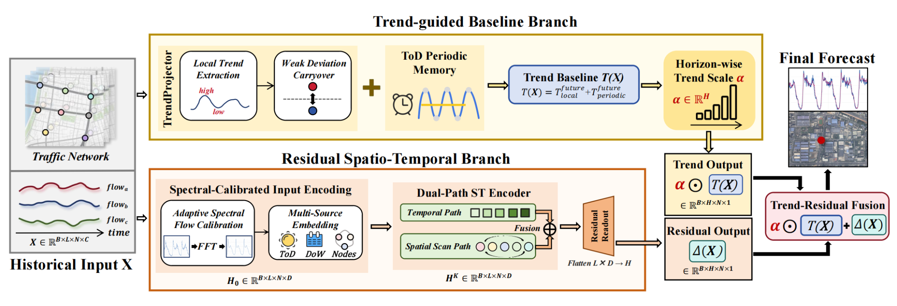
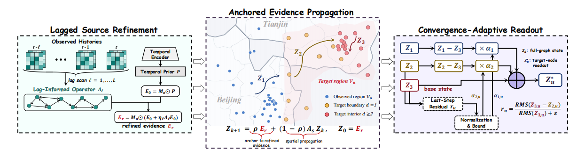
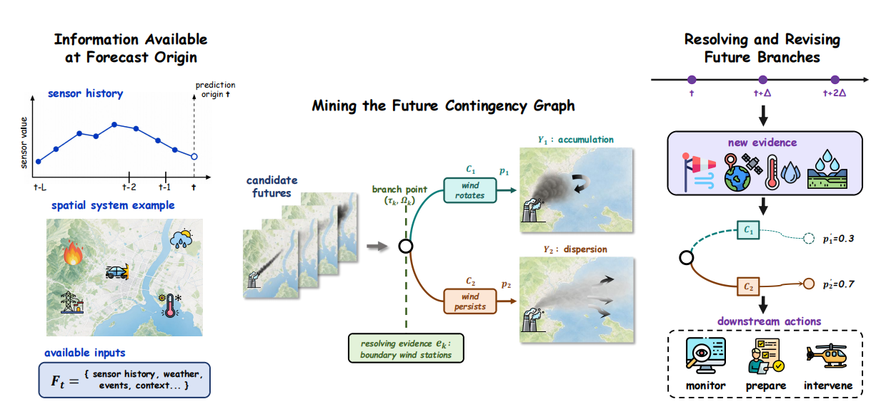

PRICAI · 2026 (CORE B)
TReST: Trend-Guided Residual Spatio-Temporal Modeling for Traffic Forecasting

Be strong and courageous.
Joshua 1:9
陈达沛
I am a senior undergraduate student majoring in Artificial Intelligence at Hunan University of Technology and Business, advised by Bo Wu. I also work as a Student Research Assistant at Xiangjiang Laboratory.
My research focuses on spatiotemporal learning and GeoAI. I am interested in modeling geographic structure, physical interactions, and multiple plausible futures for urban and environmental systems. My first-author work has appeared at PRICAI 2026, the IEEE ICDM 2026 BlueSky Track, and ACM SIGSPATIAL 2026 GeoAI.
PRICAI · 2026 (CORE B)

ACM SIGSPATIAL GeoAI (CORE A)· 2026

IEEE ICDM BlueSky Track (CORE A*)· 2026

For research conversations and collaboration
chandapei463